Van de achttien bevindingen die in de vorige audit op alle pagina's stonden, zijn er elf opgelost. De cookiemelding krijgt nu als eerste de toetsenbordfocus en bedekt geen elementen meer die focus krijgen, er is een skiplink, er is een zoekfunctie als tweede manier om pagina's te vinden, de tekst in de header staat als tekst in de HTML, de actieve link in het menu is onderstreept, het submenu geeft zijn staat door en de menuknop heeft een naam gekregen. Hieronder staan de punten die nog open staan en drie nieuwe bevindingen.
#11 - Zoomen is niet mogelijk in oudere browsers door bepaalde code
Impact: Matig
Type: Techniek
WCAG: 1.4.4
EN: 9.1.4.4
Op alle pagina's staat in het head-element van de HTML nog steeds:
<meta name="viewport" content="width=device-width, initial-scale=1, maximum-scale=1, user-scalable=0" />
De waarden maximum-scale=1 en user-scalable=0 zetten inzoomen uit. Nieuwe browsers negeren deze waarden, oudere browsers niet. Daar kan een bezoeker de pagina dus niet vergroten.
Oplossing:
Haal maximum-scale=1 en user-scalable=0 uit de regel weg.
#12 - Kleurcontrast van informatieve elementen is onvoldoende
Impact: Matig
Type: Techniek
WCAG: 1.4.11
EN: 9.1.4.11
Deze bevinding is grotendeels opgelost. Twee elementen hebben nog steeds te weinig contrast, allebei blauw (#009FE3) op een witte achtergrond met een contrastratio van 2,97:1:
Oplossing:
Zorg dat informatieve elementen een contrastratio van minimaal 3,0:1 hebben tegenover hun achtergrond.
#13 - De knop "Terug naar boven" onderaan de pagina heeft geen naam
Impact: Serieus
Type: Techniek
WCAG: 1.1.1, 4.1.2
EN: 9.1.1.1, 9.4.1.2
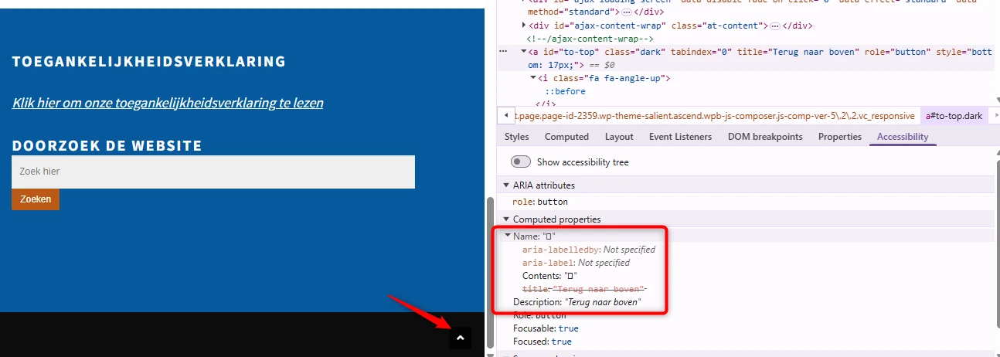
De knop is nu met het toetsenbord te bedienen. De toegankelijke naam ontbreekt nog. De knop heeft een title-attribuut met de waarde "Terug naar boven", en hulpsoftware geeft dat door als beschrijving en niet als naam. Daardoor kan hulpsoftware niet vertellen waar de knop voor is.
Oplossing:
Geef de knop een toegankelijke naam, bijvoorbeeld met zichtbare tekst, aria-label, aria-labelledby of een tekstalternatief op de afbeelding.
#18 - (Advies) Knoppen hebben niet de juiste rol
Impact: Advies
Type: Techniek
WCAG: 4.1.2
EN: 9.4.1.2
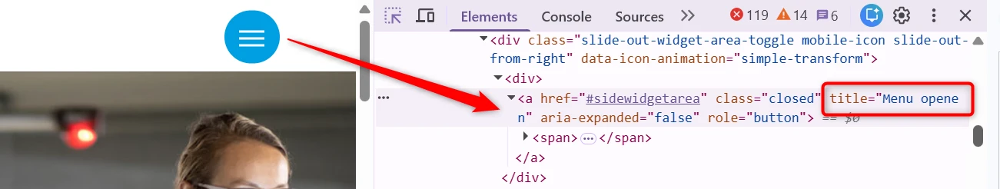
Op veel pagina's van de website staan knoppen die als a-element (link) zijn gecodeerd. Dat klopt semantisch niet, want deze elementen voeren een actie uit en navigeren niet naar een andere locatie.
Enkele voorbeelden, en dit is geen uitputtende lijst:
Oplossing:
Vervang het element dat voor de knop is gebruikt door een button-element. Kan dat niet, voeg dan role="button" toe aan het bestaande element. Hulpsoftware ziet het element dan als knop.
#62 - (Advies) Toegankelijke namen komen uit het title-attribuut
Impact: Advies
Type: Techniek
WCAG: 4.1.2
EN: 9.4.1.2
Op verschillende pagina's halen links en knoppen hun toegankelijke naam alleen uit het title-attribuut. Bij afbeeldingslinks staat er bijvoorbeeld geen betekenisvolle alt-tekst op de afbeelding, terwijl de link zijn naam uit het title-attribuut van het a-element krijgt.
Het title-attribuut telt mee bij het berekenen van een toegankelijke naam, maar als enige bron is het af te raden. Browsers, apparaten en hulpsoftware gaan er verschillend mee om, en op een aanraakscherm is de tekst vaak niet te zien.
Enkele voorbeelden, en dit is geen uitputtende lijst:
- de menuknop in de header op een klein scherm en de knop "x" in het menu;
- de afbeeldingslinks onder de kop "Stappenplan" op https://vveladen.nl/.
Oplossing:
Geef links en knoppen een toegankelijke naam die niet alleen uit het title-attribuut komt. Geef een afbeeldingslink een alt-tekst die het doel of de bestemming van de link beschrijft. Heeft een link geen zichtbare tekst, gebruik dan aria-label of aria-labelledby.
#63 - Het icoon voor een nieuw tabblad heeft geen tekstalternatiefNieuw
Impact: Matig
Type: Content
WCAG: 1.1.1
EN: 9.1.1.1
In de cookiemelding verschijnt na een klik op "Details weergeven" een aantal accordeons, bijvoorbeeld "Strikt noodzakelijk". Daarin staan links met een icoon dat aangeeft dat de link in een nieuw tabblad opent. Dat icoon heeft geen tekstalternatief, dus bezoekers die een schermlezer gebruiken weten niet dat de link een nieuw tabblad opent. Zie bijvoorbeeld de links "Piwik PRO - Privacybeleid" en "Wordpress.com - Privacybeleid".
De cookiemelding op deze website is een product van een derde partij. Binnen de scope van deze audit beschrijven we daarom alleen enkele problemen, om te laten zien dat de melding niet toegankelijk is. Een volledig onderzoek van dit onderdeel is niet uitgevoerd.
Oplossing:
Geef het icoon een tekstalternatief dat de betekenis overbrengt, bijvoorbeeld met aria-label en de tekst "Opent in nieuw tabblad". Je kunt de informatie ook als visueel verborgen tekst in de link zetten.
#64 - De focusindicator is niet zichtbaarNieuw
Impact: Klein
Type: Techniek
WCAG: 2.4.7
EN: 9.2.4.7
In de footer is de toetsenbordfocus niet te zien op links zoals "Home" en "Subsidie". Hetzelfde geldt voor de menuknop in de header, die verschijnt als de website op een klein scherm wordt bekeken.
De toetsenbordfocus moet zichtbaar zijn op alle interactieve elementen. Bezoekers die met het toetsenbord navigeren hebben die aanwijzing nodig om te weten waar ze zijn op de pagina.
Oplossing:
Gebruik de standaard focusindicator van de browser, of maak een eigen indicator die voldoende contrast heeft en duidelijk zichtbaar is.
#65 - De aangepaste focusindicator heeft onvoldoende kleurcontrastNieuw
Impact: Klein
Type: Techniek
WCAG: 1.4.11
EN: 9.1.4.11
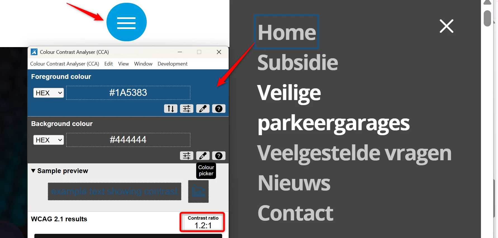
Wanneer de website op een klein scherm wordt bekeken, opent de menuknop in de header een menu. De opties in dat menu en de knop "x" hebben een aangepaste toetsenbordfocus: een blauwe (#1A5383) rand op een donkergrijze (#444444) achtergrond. De contrastratio is 1,2:1.
Die aanpassing is met CSS toegevoegd. Voor de standaard focusindicator staan in WCAG geen contrasteisen; die wordt dus altijd goedgekeurd voor dit succescriterium. Bezoekers kunnen een standaard focusindicator namelijk zelf aanpassen, naar hun eigen wensen. Maar dat kan niet meer als de focusindicator met CSS is aangepast. Daarom gelden de contrasteisen in dat geval wel.
Deze bevinding is ontstaan bij het oplossen van bevinding #16 (Mobiel menu werkt niet goed met toetsenbordfocus).
Oplossing:
Zorg dat het contrast van de aangepaste focusindicator minimaal 3,0:1 is.
Link naar pagina: https://vveladen.nl/
Van de vijf bevindingen op deze pagina zijn er twee opgelost: de afbeeldingslink onder "Stappenplan" en de link in de laatste alinea zijn nu ook zonder kleur te herkennen.
#19 - Het contrast van de tekst is minder dan 4,5:1
Impact: Matig
Type: Content
WCAG: 1.4.3
EN: 9.1.4.3
De kleuren op deze pagina zijn aangepast. In de gewone toestand is het contrast nu voldoende. In de hovertoestand is dat nog niet zo: de links "Meer nieuws", "Bereken hier uw stroomvraag", "Download werkplan", "Download modellen gemeenschappelijk" en "Download modellen privé" hebben dan witte tekst op een oranje (#C46E34) achtergrond, met een contrastratio van 3,7:1. Hetzelfde geldt voor de link "DOE DE QUICKSCAN" op https://vveladen.nl/veiligeparkeergarages/.
Onder de kop "Uitgelicht nieuws" zijn de links "Lees meer" blauw (#327AC1) op een witte achtergrond. De contrastratio is 4,47:1 en dat is net te weinig.
Oplossing:
Zorg dat het contrast minimaal 4,5:1 is, ook in de hovertoestand.
#20 - Kop is niet gemarkeerd als koptekst
Impact: Matig
Type: Content
WCAG: 1.3.1
EN: 9.1.3.1
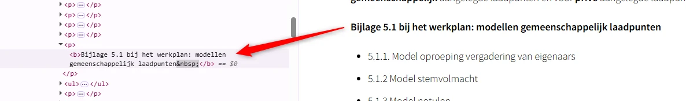
Op deze pagina zijn de volgende teksten niet gemarkeerd als kop: "Werkplan (hoort bij het stappenplan)", "Bijlage 5.1 bij het werkplan: modellen gemeenschappelijk laadpunten" en "Bijlage 5.2 bij het werkplan: modellen privé-laadpunten".
Bezoekers die hulpsoftware gebruiken hebben niets aan een (tussen)kop die er wel uitziet als kop, maar niet als kop is gemarkeerd. Via de koppen op een pagina kunnen gebruikers van hulpsoftware de inhoud scannen of snel naar een bepaalde sectie springen. Maar dat kan alleen als de kop ook echt in de code staat. Als koppen alleen visueel als kop zijn vormgegeven, bijvoorbeeld vetgedrukt, dan wijkt de structuur van de informatie in de code af van de visuele structuur. Op deze pagina staat een instructie hoe je zelf koppen op een webpagina kan testen: https://properaccess.nl/zo-controleer-je-de-koppenstructuur-van-je-website/.
Oplossing:
Markeer koppen altijd met het juiste HTML-element, op het juiste kopniveau: h1, h2, h3, h4, h5 of h6. Meestal kun je het kopniveau kiezen via de content-editor in je CMS. De HTML-code voor de kop wordt dan automatisch toegepast.
#22 - De namen van de links bij de nieuwsberichten zijn dubbel
Impact: Serieus
Type: Techniek
WCAG: 1.1.1, 2.4.4
EN: 9.1.1.1, 9.2.4.4
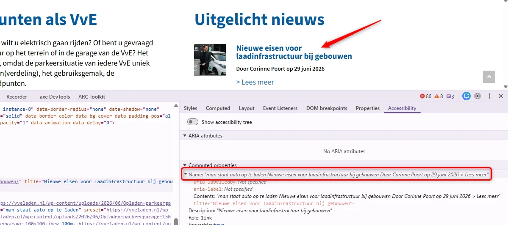
De links onder de kop "Uitgelicht nieuws" hebben nu een toegankelijke naam. Die naam is alleen dubbel. Elk nieuwsbericht bestaat uit een gelinkte afbeelding met een alt-tekst, een gelinkte kop en de publicatiegegevens. De alt-tekst van de afbeelding komt daardoor in de naam van de link terecht, bijvoorbeeld "man staat auto op te laden Nieuwe eisen voor laadinfrastructuur...". Zo is het doel van de link verwarrend.
Hetzelfde probleem staat bij de nieuwsberichten op https://vveladen.nl/nieuws/.
Oplossing:
De afbeeldingen bevatten geen informatie die nodig is om het bericht te begrijpen. Geef ze daarom een leeg alt-attribuut (alt="").
Beter nog is het om de link op de afbeelding weg te halen. Elke afbeelding heeft al een link in de kop van het bericht. Met JavaScript kun je het klikbare gebied van die link uitbreiden naar de afbeelding. Dat levert het volgende op:
- Eén duidelijke link: de koptekst geeft per bericht het doel van de link aan.
- Gebruiksvriendelijker: de afbeelding blijft klikbaar.
- Minder herhaling: de dubbele tekst in de link verdwijnt en de afbeelding heeft geen
alt-tekst meer nodig.
Link naar pagina: https://vveladen.nl/veiligeparkeergarages/
De bevinding over het contrast van de tekst op de accordeons is opgelost. De vier andere bevindingen staan nog open.
#25 - Iframe heeft geen toegankelijke naam
Impact: Matig
Type: Content
WCAG: 4.1.2
EN: 9.4.1.2
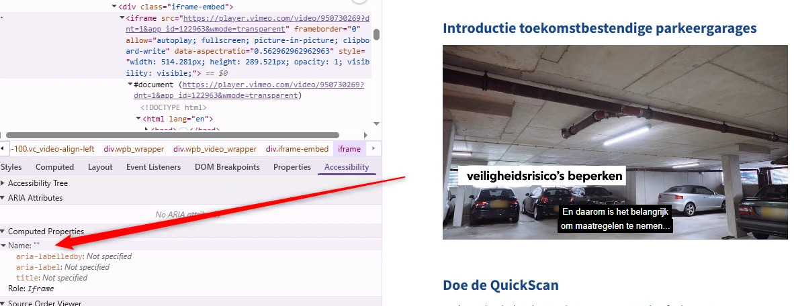
Deze pagina bevat twee iframes zonder beschrijving die zichtbaar is voor een schermlezer. Het title-attribuut ontbreekt.
Iframes moeten een goede beschrijving hebben. Die staat meestal in het title-attribuut van het iframe. Er moet in staan welk type inhoud het is, bijvoorbeeld een podcast of een video, en waar het inhoudelijk over gaat. Deze beschrijving van de inhoud moet uniek en betekenisvol zijn. Door de beschrijving kunnen bezoekers met hulpsoftware beslissen of het de moeite waard is om de inhoud van het iframe te verkennen.
Oplossing:
Voeg het title-attribuut toe aan het iframe-element, en zet daar een tekst in waaruit blijkt welk type inhoud het iframe bevat, en waar het inhoudelijk over gaat.
#26 - De Vimeo-video's gebruiken letters als sneltoetsen
Impact: Matig
Type: Content
WCAG: 2.1.4
EN: 9.2.1.4
Deze pagina bevat twee video's die gebruikmaken van sneltoetsen met één teken.
De Vimeo-speler gebruikt sneltoetsen, zoals de "s" om een video te delen en de "d" om technische details te bekijken. Deze sneltoetsen botsen met schermlezers. Ze zijn namelijk ook actief als de toetsenbordfocus op een ander element in de videospeler staat. Dit kan problemen geven voor mensen die met spraakbediening werken, omdat deze letters soms in de uitgesproken woorden zitten. Ook voor mensen die per ongeluk een toets op het toetsenbord indrukken is het onhandig.
Oplossing:
Voeg de parameter keyboard=false toe aan de URI van de video in de HTML-code. Hiermee schakel je de sneltoetsen uit, terwijl toetsenbordbediening mogelijk blijft. Bekijk voor meer informatie https://vimeo.zendesk.com/hc/en-us/articles/360001494447-Using-Player-Parameters (Engels).
#27 - Video bevat tekst of logo's waarvoor geen alternatief is
Impact: Matig
Type: Content
WCAG: 1.2.3, 1.2.5
EN: 9.1.2.3, 9.1.2.5
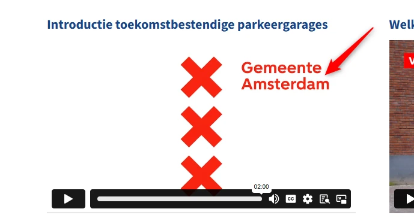
Op deze pagina staat onder de kop "Introductie toekomstbestendige parkeergarages" een video. In de video staan teksten, namen van sprekers en logo's op verschillende momenten, bijvoorbeeld de tekst "Toekomstbestendige parkeergarages" rond 0:00 tot 0:02, "Ron Galesloot - Brandweer" rond 0:03 tot 0:05 en het logo "Gemeente Amsterdam" rond 2:00. Er is geen media-alternatief en geen audiobeschrijving. Deze visuele informatie is daardoor niet toegankelijk voor blinde bezoekers.
Een soortgelijk probleem staat bij de video onder de kop "Welke maatregelen kunt u in uw VvE nemen?". Ook daar staan namen van sprekers in beeld, en aan het einde hetzelfde logo "Gemeente Amsterdam".
Oplossing:
Voor succescriterium 1.2.3 kun je dit oplossen met een geschreven tekst, een media-alternatief. Om aan succescriterium 1.2.5 te voldoen, moet er een audiobeschrijving komen die de visuele elementen in de video beschrijft, zoals namen, functies, logo's en teksten.
#29 - Het is niet in code vastgelegd of secties van de accordeon open of dicht zijn
Impact: Serieus
Type: Techniek
WCAG: 4.1.2
EN: 9.4.1.2
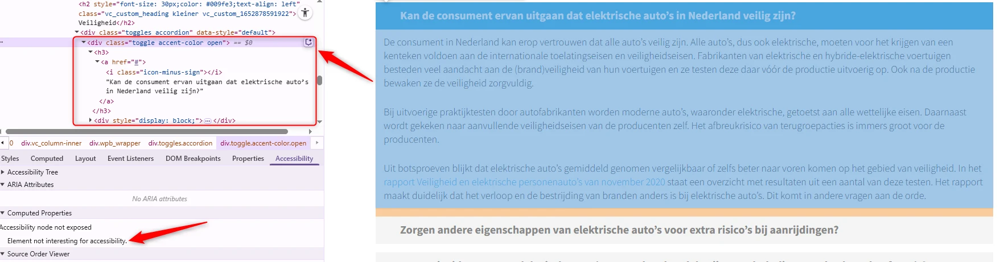
Op deze pagina staan secties met verborgen inhoud. De open of gesloten toestand is visueel duidelijk, maar wordt niet aan schermlezers doorgegeven. Voor bezoekers die de pagina kunnen zien, is duidelijk of een sectie in- of uitgeklapt is. Voor blinde of slechtziende bezoekers die een schermlezer gebruiken is dat niet zo.
Een soortgelijk probleem staat bij de accordeons op https://vveladen.nl/veelgestelde-vragen/.
Oplossing:
Voeg een aria-expanded-attribuut toe aan de knoppen waarmee je de secties opent en sluit, of voeg visueel verborgen tekst toe die de staat van de sectie aangeeft.
Link naar pagina: https://vveladen.nl/nieuws/
De afbeeldingen bij de nieuwsberichten hebben nu een alt-tekst. Daardoor staat er nu dubbele tekst in de naam van de links; dat staat beschreven bij bevinding #22. De problemen met contrast staan beschreven bij bevinding #19.
#31 - De leesvolgorde in het nieuwsbericht is niet logisch
Impact: Matig
Type: Techniek
WCAG: 1.3.2
EN: 9.1.3.2
Op deze pagina is de volgorde van de elementen in de HTML binnen een nieuwsbericht: een link met een afbeelding, de kop, de auteur en de datum, en daarna de tekst. Die leesvolgorde is niet betekenisvol.
Als je deze berichten van boven naar beneden laat voorlezen door een schermlezer, is niet duidelijk welke afbeeldingen en datums bij welk bericht horen. Dat komt doordat de koppen niet bovenaan staan in de code van elk bericht. Dit kan verwarrend zijn voor bezoekers die een schermlezer gebruiken.
Een soortgelijk probleem staat bij de nieuwsberichten op https://vveladen.nl/.
Oplossing:
Zet alle inhoud die bij een kop hoort, de afbeeldingen en de tekst, in de code onder die kop. Dat geeft een logische structuur. De visuele vormgeving mag afwijken. Een andere oplossing is om alle afbeeldingen bij de berichten als decoratief te markeren, met een leeg alt-attribuut op het img-element. De schermlezer slaat de afbeelding dan over en de leesvolgorde is: kop, inhoud.
Link naar pagina: https://vveladen.nl/author/c-poortmrae-nl/
Deze pagina bestaat niet meer. De vijf bevindingen die er in de vorige audit op stonden, #32 tot en met #36, zijn daarom niet opnieuw getoetst. Ze tellen in dit rapport niet mee als opgelost. In plaats van deze pagina is de pagina "Webinar 23 november: elektrisch laden voor VvE's" onderzocht.
Link naar pagina: https://vveladen.nl/nieuws/webinar-23-november-elektrisch-laden-voor-vves/
Deze pagina stond niet in de steekproef van de vorige audit. De twee bevindingen hieronder zijn dus nieuw.
#66 - Een opsomming is niet als lijst opgemaaktNieuw
Impact: Klein
Type: Techniek
WCAG: 1.3.1
EN: 9.1.3.1
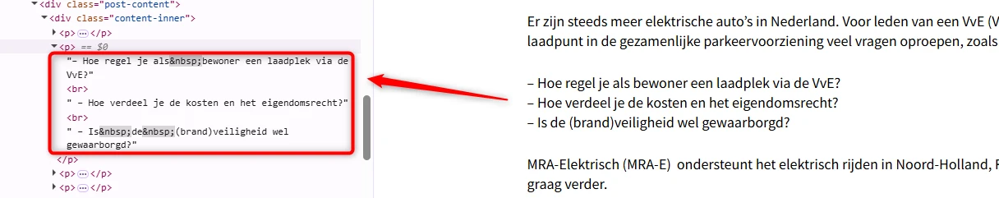
Op deze pagina staat na de woorden "... veel vragen oproepen, zoals:" een opsomming van drie punten die niet als lijst in de code staat. Hetzelfde geldt voor de opsomming na "...voor interactie en ziet er als volgt uit:".
Inhoud die er visueel uitziet als een lijst, hoort ook in de code een lijst te zijn: een ul- of ol-element. Een schermlezer meldt dan dat er een lijst begint en hoeveel punten erin staan. Zo krijgen alle bezoekers dezelfde informatie over de structuur.
Oplossing:
Zet opsommingen in een ul- of ol-element.
#67 - Koppen zijn niet als kop gemarkeerdNieuw
Impact: Matig
Type: Content
WCAG: 1.3.1
EN: 9.1.3.1
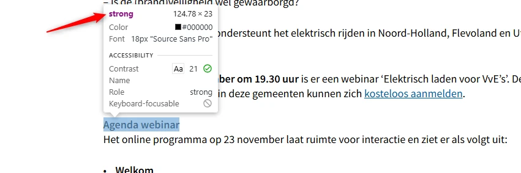
Op deze pagina is de tekst "Agenda webinar" een kop, maar er staat geen kopelement omheen. In plaats daarvan is een strong-element gebruikt, zodat de tekst eruitziet als een kop.
Het strong-element geeft nadruk aan tekst en maakt geen kop. Wie de pagina met een schermlezer leest, krijgt deze kop niet te zien in de koppenlijst en mist daarmee de opbouw van de pagina.
Een vergelijkbaar probleem staat op:
Oplossing:
Haal het strong-element weg en zet deze teksten in het kopelement dat bij hun niveau hoort, bijvoorbeeld h2 of h3.
Link naar pagina: https://vveladen.nl/nieuws/laadpunten-in-uw-vve-zorg-dat-het-past-op-het-elektriciteitsnet/
De vijf bevindingen van de vorige audit staan hier alle vijf nog open. De problemen met het contrast van interactieve en informatieve elementen staan beschreven bij bevinding #12.
#37 - Iframe heeft geen toegankelijke naam
Impact: Matig
Type: Content
WCAG: 4.1.2
EN: 9.4.1.2
Deze pagina bevat een iframe zonder title-attribuut.
Iframes moeten een goede beschrijving hebben. Die staat meestal in het title-attribuut van het iframe. Er moet in staan welk type inhoud het is, bijvoorbeeld een podcast of een video, en waar het inhoudelijk over gaat. Deze beschrijving van de inhoud moet uniek en betekenisvol zijn. Door de beschrijving kunnen bezoekers met hulpsoftware beslissen of het de moeite waard is om de inhoud van het iframe te verkennen.
Op deze pagina staat een iframe dat door een externe applicatie wordt geleverd. Binnen de scope van deze audit beschrijven we daarvan slechts enkele toegankelijkheidsproblemen, om te laten zien dat het onderdeel niet toegankelijk is. Een volledig onderzoek van dit onderdeel is niet uitgevoerd.
Oplossing:
Voeg het title-attribuut toe aan het iframe-element, en zet daar een tekst in waaruit blijkt welk type inhoud het iframe bevat, en waar het inhoudelijk over gaat.
#38 - Onzichtbaar element krijgt toetsenbordfocus
Impact: Serieus
Type: Techniek
WCAG: 2.4.3
EN: 9.2.4.3
Op deze pagina komt de toetsenbordfocus na de link "share" op meerdere onzichtbare interactieve elementen terecht.
De toetsenbordfocus mag niet terechtkomen op onzichtbare interactieve elementen zoals links, knoppen en formuliervelden. Als dat wel gebeurt, kan een bezoeker ze onbedoeld activeren.
Oplossing:
Zorg dat alleen elementen die zichtbaar zijn toetsenbordfocus kunnen krijgen, en dat de focusvolgorde logisch is.
#39 - Kleurcontrast van tekst is te laag
Impact: Matig
Type: Content
WCAG: 1.4.3
EN: 9.1.4.3
Op deze pagina staan kleine en grote teksten in blauw (#009FE3) op een grijze (#E7E7E7) achtergrond. De contrastratio is 2,4:1. Voor tekst tot 24 px of vetgedrukt moet dat minimaal 4,5:1 zijn, voor grote tekst vanaf 24 px of vetgedrukt minimaal 3,0:1.
Oplossing:
Verhoog het contrast naar minimaal 3,0:1 voor grote tekst en minimaal 4,5:1 voor kleine tekst.
#40 - De naam van de knop beschrijft niet wat de knop doet
Impact: Serieus
Type: Techniek
WCAG: 2.4.6
EN: 9.2.4.6
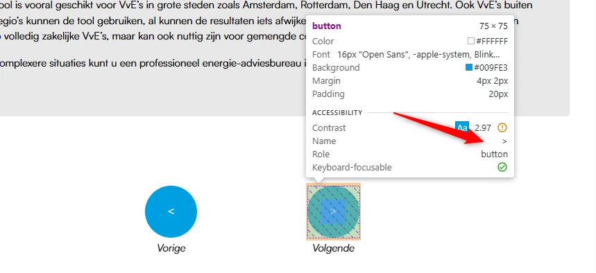
Onderaan deze pagina staan de knoppen "Vorige" en "Volgende" waarmee je van stap wisselt. Hun toegankelijke namen zijn "<" en ">". Die beschrijven de functie van de knop niet. Daardoor is het voor bezoekers die een schermlezer gebruiken moeilijk te begrijpen wat de knoppen doen. De toegankelijke naam moet duidelijk en beknopt aangeven welke actie de knop uitvoert.
Oplossing:
Werk de toegankelijke namen bij, bijvoorbeeld met aria-label, zodat ze de functie van de knoppen weergeven: "Ga naar de vorige stap" en "Ga naar de volgende stap".
#41 - Invoerveld heeft geen toegankelijke naam
Impact: Serieus
Type: Techniek
WCAG: 4.1.2
EN: 9.4.1.2
In de tweede stap staan twee invoervelden. De labels zijn niet aan de invoervelden gekoppeld, waardoor de toegankelijke namen ontbreken.
Daardoor is het voor blinde of slechtziende bezoekers die een schermlezer gebruiken niet duidelijk wat zij moeten invullen.
Oplossing:
Geef het invoerveld een toegankelijke naam, bijvoorbeeld door een label-element aan het veld te koppelen.
Link naar pagina: https://vveladen.nl/?s=werk
Deze pagina wordt vervormd weergegeven en de footer bedekt een groot deel van de inhoud. Daardoor is geen volledig toegankelijkheidsonderzoek van deze pagina mogelijk. Als de weergave is hersteld, kunnen er meer toegankelijkheidsproblemen zichtbaar worden die opnieuw onderzocht moeten worden.
In de vorige audit stonden op deze pagina geen eigen bevindingen. De problemen met links en met de leesvolgorde staan beschreven bij bevinding #22 en #31.
#4 - Het contrast van de tekst is minder dan 4,5:1
Impact: Matig
Type: Content
WCAG: 1.4.3
EN: 9.1.4.3
Deze bevinding ging in de vorige audit over de cookiemelding, over de pagina van de auteur en over deze pagina. De cookiemelding is aangepast en de pagina van de auteur bestaat niet meer. Op deze pagina staat het probleem er nog: teksten zoals "Blog Post" en "Page" zijn grijs (#999999) op een witte achtergrond, met een contrastratio van 2,8:1. Deze teksten zijn kleiner dan 24 px, dus de contrastratio moet minimaal 4,5:1 zijn.
Oplossing:
Zorg dat alle teksten kleiner dan 24 px een contrastratio van minimaal 4,5:1 hebben.
#30 - Afbeelding is een link, maar heeft geen alt-tekst
Impact: Matig
Type: Techniek
WCAG: 1.1.1, 2.4.4, 4.1.2
EN: 9.1.1.1, 9.2.4.4, 9.4.1.2
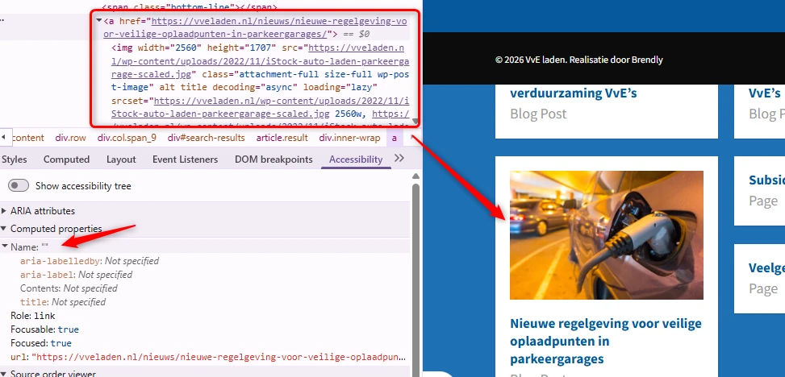
Op de pagina Nieuws is deze bevinding opgelost. Op deze pagina staat hij nog: een deel van de zoekresultaten bestaat uit een gelinkte afbeelding met een leeg alt-attribuut en een gelinkte kop die naar dezelfde bestemming gaat. De link op de afbeelding heeft daardoor geen tekst.
Oplossing:
Een alt-tekst die het linkdoel beschrijft lost een deel van het probleem op. Beter is het om de link op de afbeelding weg te halen. Elke afbeelding heeft al een link in de kop van het bericht. Met JavaScript kun je het klikbare gebied van die link uitbreiden naar de afbeelding. Dat levert het volgende op:
- Eén duidelijke link: de koptekst geeft het doel van de link aan.
- Gebruiksvriendelijker: de afbeelding blijft klikbaar.
- Minder herhaling: de dubbele link verdwijnt en de afbeelding heeft geen
alt-tekst meer nodig.
#68 - Elementen die toetsenbordfocus krijgen zijn bedektNieuw
Impact: Matig
Type: Techniek
WCAG: 2.4.11
EN: 9.2.4.11
Op deze pagina bedekt een vaste footer een deel van de inhoud. Interactieve elementen zoals de zoekresultaten in de tweede rij krijgen wel toetsenbordfocus, maar de focusindicator valt achter die footer. Bezoekers die met het toetsenbord navigeren kunnen daardoor niet zien waar de focus staat.
Oplossing:
Zorg dat de vaste footer geen interactieve elementen of hun focusindicatoren bedekt.
#69 - Toegankelijke namen staan in het EngelsNieuw
Impact: Matig
Type: Techniek
WCAG: 3.1.2
EN: 9.3.1.2
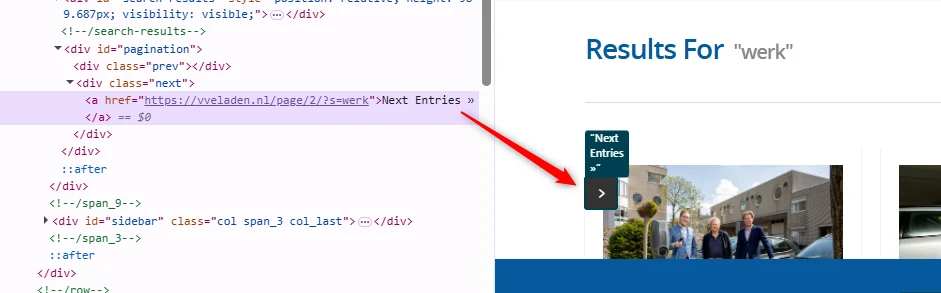
Op deze pagina staan knoppen met pijliconen die Engelse toegankelijke namen hebben: "Previous Entries" en "Next Entries". De hoofdtaal van de pagina is Nederlands. Schermlezers lezen deze Engelse namen daardoor voor met Nederlandse uitspraakregels, en dan zijn ze lastig te verstaan.
Oplossing:
Vertaal deze teksten naar het Nederlands, zodat schermlezers ze goed uitspreken.
Link naar pagina: https://vveladen.nl/video/
De drie bevindingen van de vorige audit staan hier alle drie nog open.
#42 - Het type content in het iframe is niet beschreven in het title-attribuut
Impact: Klein
Type: Content
WCAG: 2.4.6
EN: 9.2.4.6
Deze pagina bevat twee iframes met in het title-attribuut de teksten "Ondersteuning en advies voor eigen laadpalen op VvE terrein" en "Aan de slag met laadpunten voor een VvE garage".
Daarin moet ook staan welk type inhoud het is, bijvoorbeeld een podcast of een video, en waar het inhoudelijk over gaat. Deze beschrijving van de inhoud moet uniek en betekenisvol zijn. Door de beschrijving kunnen bezoekers met hulpsoftware beslissen of het de moeite waard is om de inhoud van het iframe te verkennen.
Oplossing:
Pas de tekst van het title-attribuut aan, zodat duidelijk is welk type inhoud het iframe bevat en waar het inhoudelijk over gaat.
#43 - De YouTube-video's gebruiken letters als sneltoetsen
Impact: Matig
Type: Content
WCAG: 2.1.4
EN: 9.2.1.4
Deze pagina bevat twee YouTube-videospelers die gebruikmaken van sneltoetsen met één teken.
De YouTube-speler gebruikt sneltoetsen, zoals de "k" om de video te starten of te stoppen en de "m" om het geluid uit te zetten. Deze sneltoetsen botsen met schermlezers. Ze zijn namelijk ook actief als de toetsenbordfocus op een ander element in de videospeler staat. Dit kan problemen geven voor mensen die met spraakbediening werken, omdat deze letters soms in de uitgesproken woorden zitten. Ook voor mensen die per ongeluk een toets op het toetsenbord indrukken is het onhandig.
Oplossing:
Voeg de parameter disablekb=1 toe aan de URI van de video in de HTML-code. Hiermee schakel je de sneltoetsen uit, terwijl toetsenbordbediening mogelijk blijft. Bekijk voor meer informatie https://developers.google.com/youtube/player_parameters#disablekb (Engels).
#44 - Video bevat tekst die niet toegankelijk is voor een blinde bezoeker
Impact: Matig
Type: Content
WCAG: 1.2.3, 1.2.5
EN: 9.1.2.3, 9.1.2.5
Op deze pagina staat onder de kop "Voorbeeld VvE: Het Bastion" een video. Aan het einde van de video verschijnen tekst en URL's in beeld, bijvoorbeeld rond 4:06. Er is geen media-alternatief en geen audiobeschrijving. Deze visuele informatie is daardoor niet toegankelijk voor blinde bezoekers.
Oplossing:
Voor succescriterium 1.2.3 kun je dit oplossen met een geschreven tekst, een media-alternatief. Om aan succescriterium 1.2.5 te voldoen, moet er een audiobeschrijving komen die de visuele elementen in de video beschrijft, zoals namen, functies, logo's en teksten.
Link naar pagina: https://vveladen.nl/
Link naar PDF: https://vveladen.nl/wp-content/uploads/2022/04/NAL-BROCHURE_TOEGANKELIJK.pdf
Dit PDF-document is niet aangepast. De vier bevindingen van de vorige audit staan er alle vier nog in.
#47 - Kleurcontrast van tekst is te laag
Impact: Matig
Type: Content
WCAG: 1.4.3
EN: 10.1.4.3
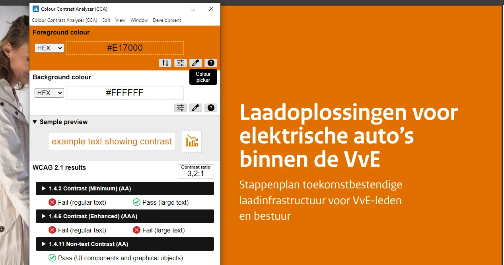
In het PDF-document staat op veel pagina's witte tekst op een oranje (#E17000) achtergrond, en omgekeerd, bijvoorbeeld op pagina 1, 3, 5 en 6. De contrastratio is 3,2:1. Dat is genoeg voor grote teksten zoals koppen, maar te weinig voor gewone of kleine tekst.
Op sommige pagina's staat tekst in diezelfde oranje kleur op een lichtoranje (#F9E2CC) achtergrond. De contrastratio is dan 2,6:1, en dat is voor zowel kleine als grote tekst te weinig. Voorbeelden zijn de tekst "Fase I Voorbereiding" op pagina 3, de teksten in de eerste rij van de tabel op pagina 5 en de tekst "Hoe worden laadpunten aangesloten?" op pagina 15.
Op pagina 4 staat een afbeelding met witte teksten op een blauwe (#469AD3) achtergrond, bijvoorbeeld "Elektriciteitsmeter", "Data verbinding" en "Load balancer". De contrastratio is 3,1:1.
Op pagina 5 staat een tabel. In de tweede en derde rij staat blauwe tekst (#007BC7 en #01689B) op lichtblauwe achtergronden (#E0EFF8 en #C0D9E6). De contrastratio is 3,8:1 en 4,1:1. Dat is te weinig voor kleine teksten.
Oplossing:
Zorg dat het kleurcontrast minimaal 3,0:1 is voor grote tekst en minimaal 4,5:1 voor kleine tekst.
#48 - Koppen zijn niet als kop gemarkeerd
Impact: Matig
Type: Content
WCAG: 1.3.1
EN: 10.1.3.1
In het PDF-document staan meerdere koppen die niet als kop zijn gemarkeerd. Voorbeelden zijn "Laadoplossingen voor elektrische auto's binnen de VvE" op pagina 1, "Hoe laadt een elektrische auto eigenlijk?", "Laden bij de VvE" en "Is het laden van elektrische auto's veilig?" op pagina 4, en "Tip" op pagina 6 en 9.
Zo verschilt de visuele informatiestructuur van de structuur van het document in de codes.
Oplossing:
Vervang de P-tag door de H-tag, zodat de structuur in de codes gelijk is aan de visuele structuur.
#49 - Gewone tekst is gemarkeerd als kop voor styling
Impact: Matig
Type: Content
WCAG: 1.3.1
EN: 10.1.3.1
In het PDF-document staan op pagina 44 teksten die als kop zijn opgemaakt om ze visueel te laten opvallen. Het gaat om de teksten die beginnen met "5.1.1...", "5.1.2...", "5.1.3...", "5.2.1..." en vergelijkbare teksten. Dit zijn geen koppen.
Zo verschilt de visuele informatiestructuur van de structuur van het document in de codes.
Oplossing:
Vervang de H-tag door de P-tag, zodat de structuur in de codes gelijk is aan de visuele structuur.
#50 - Informatieve afbeeldingen hebben geen alt-tekst
Impact: Matig
Type: Content
WCAG: 1.1.1
EN: 10.1.1.1
In het PDF-document staan op de eerste en op de laatste pagina informatieve afbeeldingen, namelijk logo's, zonder tekstalternatief.
Afbeeldingen die met de Figure-tag zijn geplaatst, moeten altijd een beschrijving hebben. De Figure-tag is alleen bedoeld voor informatieve afbeeldingen. Schermlezers lezen de alt-tekst voor, zodat blinde bezoekers ook alle informatie krijgen. Nu de alt-tekst ontbreekt, lezen schermlezers alleen "afbeelding" voor.
Oplossing:
Geef deze informatieve afbeeldingen een tekstalternatief.
Link naar pagina: https://vveladen.nl/veiligeparkeergarages/
Link naar PDF: https://vveladen.nl/wp-content/uploads/2024/04/TOD24009_Document_Brandveiligheid-VvE-garages_V4_WEB-DT.pdf
Dit PDF-document is niet aangepast. De drie bevindingen van de vorige audit staan er alle drie nog in.
#51 - Koppen zijn niet als kop gemarkeerd
Impact: Matig
Type: Content
WCAG: 1.3.1
EN: 10.1.3.1
In het PDF-document is de kop "Is de brandveiligheid in uw vve-garage nog op orde?" niet als kop gemarkeerd.
Zo verschilt de visuele informatiestructuur van de structuur van het document in de codes.
Oplossing:
Vervang de P-tag door de H-tag, zodat de structuur in de codes gelijk is aan de visuele structuur.
#52 - Een deel van het document is niet voorzien van codes
Impact: Matig
Type: Content
WCAG: 1.3.1
EN: 10.1.3.1
Het PDF-document is maar gedeeltelijk getagd. De tekst "QuickScan: zicht op concrete verbeteringen" heeft geen codes.
Oplossing:
Voorzie dit deel van codes die de structuur van het document weergeven.
#53 - Informatieve afbeeldingen hebben geen alt-tekst
Impact: Matig
Type: Content
WCAG: 1.1.1
EN: 10.1.1.1
In het PDF-document staan bovenaan de eerste pagina drie logo's. Dat zijn informatieve afbeeldingen zonder tekstalternatief.
Afbeeldingen die met de Figure-tag zijn geplaatst, moeten altijd een beschrijving hebben. De Figure-tag is alleen bedoeld voor informatieve afbeeldingen. Schermlezers lezen de alt-tekst voor, zodat blinde bezoekers ook alle informatie krijgen. Nu de alt-tekst ontbreekt, lezen schermlezers alleen "afbeelding" voor.
Oplossing:
Geef deze informatieve afbeeldingen een tekstalternatief.